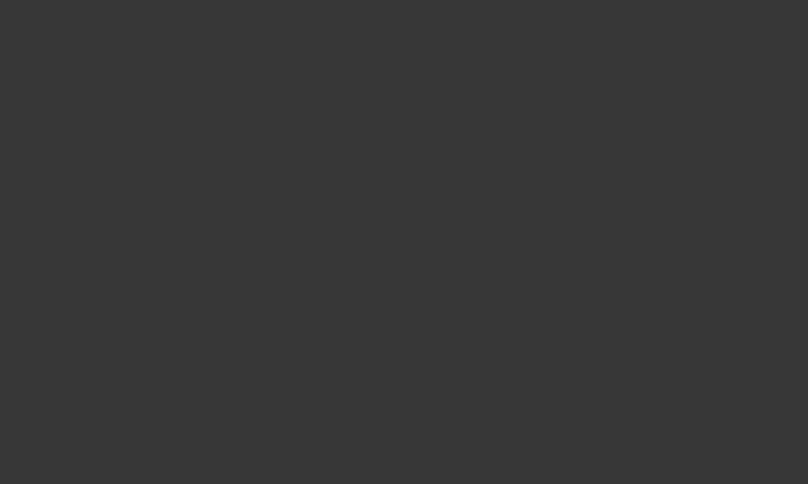

Public space
The public spaces are designed as a sequence of open terraces and semi-private courtyards. They connect the buildings with the landscape and create comfortable routes for residents.
Each level offers different views and scenarios of interaction with the city and the hills, forming a gradual transition from public to private.